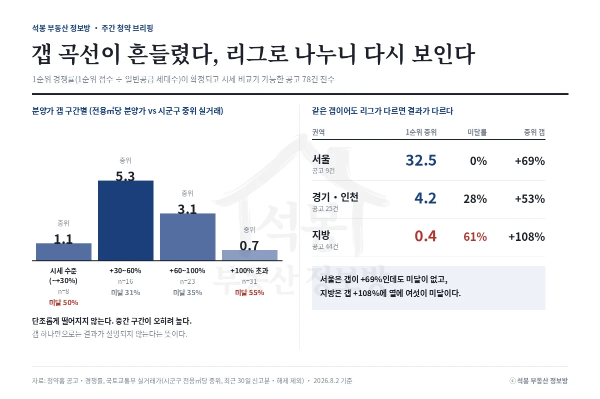

지난주(7월 27일~8월 2일) 마감분 성적이 갈렸습니다. 서울 월계는 1순위 48.8대 1, 경기 이천은 534세대에 접수 13건이었습니다. 다음 주(8월 3일~9일)는 월요일 하루에 다섯 곳이 문을 엽니다.
지난주 성적표: 같은 주에 48.8대 1과 0.02대 1
이 글의 경쟁률은 모두 1순위 경쟁률(1순위 접수 건수 ÷ 일반공급 세대수)입니다. 2순위와 특별공급은 빠져 있어 청약홈 총 접수 건수와는 달라 보일 수 있습니다. 갭은 전용면적당 분양가가 같은 시군구 중위 실거래보다 얼마나 높은지입니다.
단지
지역
모집
분양가 갭(전용㎡당)
1순위 경쟁률
월계 중흥S-클래스 리비에르
서울 노원
135
+86%
48.8대 1
역북 서희스타힐스 프라임시티(취소분)
경기 용인
5
+41%
7.8대 1
창원 한신더휴 메가센텀
경남 창원
1,139
+146%
7.3대 1
이천 휴먼빌 클래스원
경기 이천
536
시세 표본 부족
0.02대 1 (미달)
월계 중흥은 지난주 이 자리에서 "가격 부담은 분명한데 서울 신축 희소성이 그걸 상쇄하느냐가 관건"이라고 짚었던 단지입니다. 희소성이 이겼습니다. 노원 대장 신축 포레나노원이 전용 84㎡ 13.8억에 거래되는 동네에서, 구축 중위 대비 +86%라는 가격표는 결정적 장애물이 아니었습니다.
창원 한신더휴는 반대 사례입니다. 갭이 +146%로 가장 컸는데 7.3대 1로 마감했습니다. 창원시 중위 실거래에는 1980~90년대 구축이 잔뜩 섞여 있어, 마산회원구 중심 신축의 잣대로는 애초에 맞지 않았던 겁니다. 갭만 보고 미달을 점쳤다면 틀렸을 자리입니다. 고양창릉 S-3·S-4는 발표가 8월 18일과 19일이라 아직 결과가 없습니다.
여기서부터는 회원에게 보여드립니다
카카오 로그인 3초면 전문을 읽을 수 있습니다. 무료입니다.
가입하시면 지역 시장조사 보고서(약식)를 2회 무료로 요청하실 수 있습니다.
이미 회원이면 같은 버튼으로 로그인만 됩니다
경쟁률 공식: 갭 곡선이 이번 주 흔들렸다

분양가와 시세를 함께 볼 수 있고 1순위 경쟁률까지 확정된 공고 78건을 전수로 다시 계산했습니다.
분양가 갭 구간(전용㎡당)
공고 수
1순위 중위 경쟁률
미달 비율
시세 수준 (~+30%)
8
1.1대 1
50%
+30~60%
16
5.3대 1
31%
+60~100%
23
3.1대 1
35%
+100% 초과
31
0.7대 1
55%
양 끝은 말이 됩니다. 가운데가 뒤집혔습니다. 시세 수준 구간은 표본이 여덟 건뿐이라, 상한제가 걸린 안양 에버포레(57.1대 1, 22.0대 1)와 수요가 얕은 화성 야목역·용인 양지(0.1~0.3대 1)가 한 칸에 섞여 있습니다. 통계상 시세보다 싼데도 통장이 안 붙은 겁니다.
권역
공고 수
1순위 중위 경쟁률
미달 비율
중위 분양가 갭
서울
9
32.5대 1
0%
+69%
경기·인천
25
4.2대 1
28%
+53%
지방
44
0.4대 1
61%
+108%
권역으로 나누면 다시 선명해집니다. 서울은 갭 +69%에도 미달이 없고, 지방은 +108%에 열 곳 중 여섯이 미달입니다. 갭은 같은 리그 안에서만 통하는 잣대입니다. 서울의 +80%와 지방의 +80%는 같은 숫자가 아닙니다.
청약 성적 미리 읽는 체크 5가지
월계는 ①만 나빴고 나머지가 전부 흥행 쪽이었습니다. 창원은 ①③④가 불리했지만 ②의 보정폭이 컸고, 이천은 보정 여지가 없는 상태에서 ③④까지 겹쳤습니다. 다섯 개를 같이 봐야 하는 이유가 이 세 단지 안에 다 있습니다.
다음 주 캘린더: 월요일에 다섯 곳
8월 3일 하루에 전국 다섯 곳이 시작합니다. 수도권은 수원 당수지구 하나, 나머지 물량은 지방입니다. 수원 당수는 4일, 나머지는 5일에 문을 닫습니다. 발표는 3일 용인 역북, 4일 이천·창원과 부천 역곡 신혼희망타운, 5일 서울 월계, 7일 군포 대야미 순입니다. 강릉 리쉐스302(+113%), 부산 더샵 트리센트(+90%), 아산 더원 7차(+73%)는 앞의 표에서 지방 고갭 구간에 놓입니다. 그 구간 성적은 중위 0.4대 1, 미달률 61%였습니다.
주목 단지: 수원 당수지구 A5블록
다섯 곳 중 유일한 수도권이자, 갭이 유일하게 한 자릿수(+10%)인 곳입니다. 142세대 추가 모집, 분양가 3.48~4.15억, 전용면적당 755만원(평당 2,496만원, 전용 기준). 당수동 바로 옆 라포리엘은 지난달 전용 55.65㎡가 5.03억에 팔렸습니다. 같은 크기 새 아파트를 시세로 사는 것과 이번 분양의 차이를 실거래로 따져본 분석 글을 따로 준비했습니다. 신혼희망타운은 소득·자산·혼인 기간 요건이 일반 공공분양과 다르니 공고문부터 확인하세요.
원자료: 청약홈 분양 공고·경쟁률(1순위 경쟁률 = 1순위 접수 건수 ÷ 일반공급 세대수), 국토교통부 실거래가 공개시스템(시세는 같은 시군구 전용면적당 중위 실거래가, 최근 30일 신고분, 해제 건 제외, 2026년 8월 2일 기준) · 분석·제작: 석봉 부동산 정보방 · 본 자료는 정보 제공 목적이며 투자 권유가 아닙니다. 청약 자격·일정은 청약홈 공고문을 반드시 확인하세요.
![[주간 청약 브리핑] 월계는 62세대에 3,024명, 이천은 534세대에 13명](../글이미지/20260802/브리핑_지난주성적표.webp)
![[주간 청약 브리핑] 월계는 62세대에 3,024명, 이천은 534세대에 13명](../글이미지/20260802/브리핑_체크5.webp)
![[주간 청약 브리핑] 월계는 62세대에 3,024명, 이천은 534세대에 13명](../글이미지/20260802/브리핑_다음주캘린더.webp)